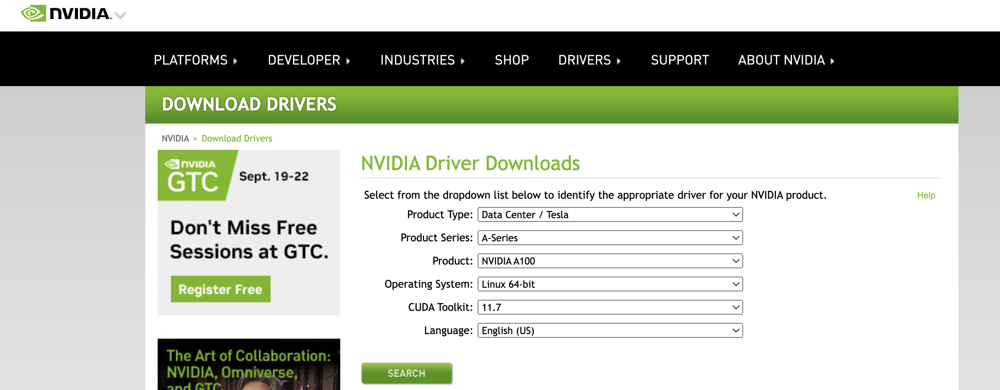
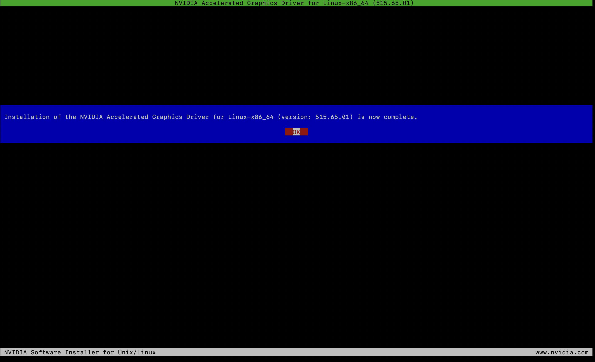
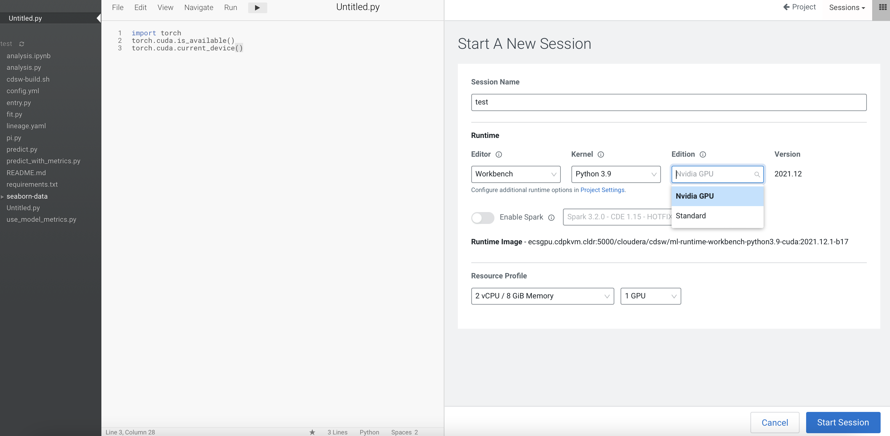
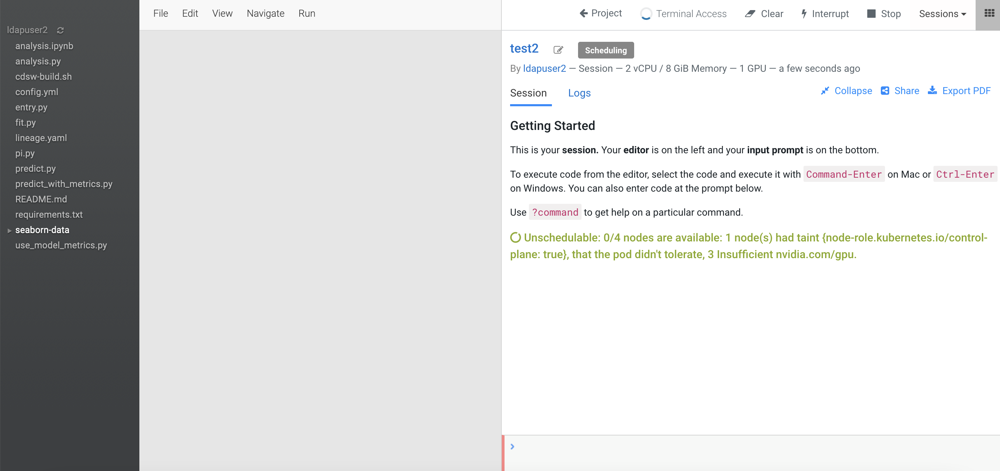

Deploy Nvidia GPU in ECS
This article describes the steps to install the Nvidia GPU software driver and its associated software in the CDP PvC Data Services platform with ECS solution. These implementation steps must be carried out after the node (with Nvidia GPU card) is added into the ECS platform/cluster. This article also describes the steps to test the GPU card in the CML workspace.
Install Nvidia Driver and Nvidia-container-runtime
-
Based on the Nvidia GPU card specification, browse the Nvidia site in order to check which software driver version to use. This demo uses Nvidia A100 GPU card and a check at the Nvidia site shows that version
515.65.01is recommended.

-
Cordon the GPU worker node.
# kubectl cordon ecsgpu.cdpkvm.cldr node/ecsgpu.cdpkvm.cldr cordoned -
In the ECS host/node installed with Nvidia GPU card, install the necessary OS software packages as described below and subsequently reboot the node. In this demo, the OS of the node is Centos7.9 and the hostname of the node with GPU card installed is
ecsgpu.cdpkvm.cldr.# yum update -y # yum install -y tar bzip2 make automake gcc gcc-c++ pciutils elfutils-libelf-devel libglvnd-devel vim bind-utils wget # yum install -y https://dl.fedoraproject.org/pub/epel/epel-release-latest-7.noarch.rpm # yum -y group install "Development Tools" # yum install -y kernel-devel-$(uname -r) kernel-headers-$(uname -r) # reboot -
Subsequently, install the Nvidia driver and
nvidia-container-runtimesoftware by executing the following commands.# BASE_URL=https://us.download.nvidia.com/tesla # DRIVER_VERSION=515.65.01 # curl -fSsl -O $BASE_URL/$DRIVER_VERSION/NVIDIA-Linux-x86_64-$DRIVER_VERSION.run # sh NVIDIA-Linux-x86_64-$DRIVER_VERSION.run


-
After successful installation, run the
nvidia-smitool and ensure the driver is deployed successfully by verifying the similar output as shown in the following example.[root@ecsgpu ~]# nvidia-smi Wed Aug 24 13:03:46 2022 +-----------------------------------------------------------------------------+ | NVIDIA-SMI 515.65.01 Driver Version: 515.65.01 CUDA Version: 11.7 | |-------------------------------+----------------------+----------------------+ | GPU Name Persistence-M| Bus-Id Disp.A | Volatile Uncorr. ECC | | Fan Temp Perf Pwr:Usage/Cap| Memory-Usage | GPU-Util Compute M. | | | | MIG M. | |===============================+======================+======================| | 0 NVIDIA A100-PCI... Off | 00000000:08:00.0 Off | 0 | | N/A 32C P0 37W / 250W | 0MiB / 40960MiB | 3% Default | | | | Disabled | +-------------------------------+----------------------+----------------------+ +-----------------------------------------------------------------------------+ | Processes: | | GPU GI CI PID Type Process name GPU Memory | | ID ID Usage | |=============================================================================| | No running processes found | +-----------------------------------------------------------------------------+ [root@ecsgpu ~]# lsmod | grep nvidia nvidia_drm 53212 0 nvidia_modeset 1142094 1 nvidia_drm nvidia 40761292 1 nvidia_modeset drm_kms_helper 186531 3 qxl,nouveau,nvidia_drm drm 468454 7 qxl,ttm,drm_kms_helper,nvidia,nouveau,nvidia_drm [root@ecsgpu ~]# dmesg | grep nvidia [ 123.588172] nvidia: loading out-of-tree module taints kernel. [ 123.588182] nvidia: module license 'NVIDIA' taints kernel. [ 123.704411] nvidia: module verification failed: signature and/or required key missing - tainting kernel [ 123.802826] nvidia-nvlink: Nvlink Core is being initialized, major device number 239 [ 123.925577] nvidia-uvm: Loaded the UVM driver, major device number 237. [ 123.934813] nvidia-modeset: Loading NVIDIA Kernel Mode Setting Driver for UNIX platforms 515.65.01 Wed Jul 20 13:43:59 UTC 2022 [ 123.940999] [drm] [nvidia-drm] [GPU ID 0x00000800] Loading driver [ 123.941018] [drm] Initialized nvidia-drm 0.0.0 20160202 for 0000:08:00.0 on minor 1 [ 123.958317] [drm] [nvidia-drm] [GPU ID 0x00000800] Unloading driver [ 123.968642] nvidia-modeset: Unloading [ 123.978362] nvidia-uvm: Unloaded the UVM driver. [ 123.993831] nvidia-nvlink: Unregistered Nvlink Core, major device number 239 [ 137.450679] nvidia-nvlink: Nvlink Core is being initialized, major device number 240 [ 137.503657] nvidia-modeset: Loading NVIDIA Kernel Mode Setting Driver for UNIX platforms 515.65.01 Wed Jul 20 13:43:59 UTC 2022 [ 137.508187] [drm] [nvidia-drm] [GPU ID 0x00000800] Loading driver [ 137.508190] [drm] Initialized nvidia-drm 0.0.0 20160202 for 0000:08:00.0 on minor 1 [ 149.717193] nvidia 0000:08:00.0: irq 48 for MSI/MSI-X [ 149.717222] nvidia 0000:08:00.0: irq 49 for MSI/MSI-X [ 149.717248] nvidia 0000:08:00.0: irq 50 for MSI/MSI-X [ 149.717275] nvidia 0000:08:00.0: irq 51 for MSI/MSI-X [ 149.717301] nvidia 0000:08:00.0: irq 52 for MSI/MSI-X [ 149.717330] nvidia 0000:08:00.0: irq 53 for MSI/MSI-X -
Install the
nvidia-container-runtimesoftware package. Reboot the server.# curl -s -L https://nvidia.github.io/nvidia-container-runtime/$(. /etc/os-release;echo $ID$VERSION_ID)/nvidia-container-runtime.repo | sudo tee /etc/yum.repos.d/nvidia-container-runtime.repo # yum -y install nvidia-container-runtime # rpm -qa | grep nvidia libnvidia-container-tools-1.11.0-1.x86_64 libnvidia-container1-1.11.0-1.x86_64 nvidia-container-toolkit-base-1.11.0-1.x86_64 nvidia-container-runtime-3.11.0-1.noarch nvidia-container-toolkit-1.11.0-1.x86_64 # nvidia-container-toolkit -version NVIDIA Container Runtime Hook version 1.11.0 commit: d9de4a0 # reboot -
Uncordon the GPU worker node.
# kubectl uncordon ecsgpu.cdpkvm.cldr node/ecsgpu.cdpkvm.cldr cordoned
Nvidia GPU Card Testing and Verification in CML
-
Assuming the CDP PvC Data Services with ECS platform is already installed, SSH into the ECS master node and run the following command to ensure that
ecsgpu.cdpkvm.cldrhost hasnvidia.com/gpu:field in the node specification. Hostecsgpu.cdpkvm.cldris a typical ECS worker node without Nvidia GPU card installed.[root@ecsmaster1 ~]# kubectl describe node ecsgpu.cdpkvm.cldr | grep -A15 Capacity: Capacity: cpu: 16 ephemeral-storage: 209703916Ki hugepages-1Gi: 0 hugepages-2Mi: 0 memory: 263975200Ki nvidia.com/gpu: 1 pods: 110 Allocatable: cpu: 16 ephemeral-storage: 203999969325 hugepages-1Gi: 0 hugepages-2Mi: 0 memory: 263975200Ki nvidia.com/gpu: 1 pods: 110 [root@ecsmaster1 ~]# kubectl describe node ecsworker1.cdpkvm.cldr | grep -A13 Capacity: Capacity: cpu: 16 ephemeral-storage: 103797740Ki hugepages-1Gi: 0 hugepages-2Mi: 0 memory: 263974872Ki pods: 110 Allocatable: cpu: 16 ephemeral-storage: 100974441393 hugepages-1Gi: 0 hugepages-2Mi: 0 memory: 263974872Ki pods: 110 -
Assuming a CML workspace is already provisioned in the CDP PvC Data Services platform, navigate to
Site Administration>Runtime/Engine. Select the number forMaximum GPUs per Session/GPU. This procedure effectively allows the CML session to consume the GPU card.
-
Create a CML project and start a new session by selecting the
Workbencheditor with Python kernel alongsideNvidia GPUedition. Choose the number of GPU to use - in this demo, the quantity is 1.
-
Create a new Python file and run the following script. Also, open the terminal session and run
nvidia-smitool. Note that the output shows the Nvidia GPU card details.!pip3 install torch import torch torch.cuda.is_available() torch.cuda.device_count() torch.cuda.get_device_name(0)
-
Navigate to the CML project main page and a check at the user resources dashboard displays the GPU card availability.


-
SSH into the ECS master node and run the following command to verify the node that hosting the above CML project session pod is
ecsgpu.cdpkvm.cldr.[root@ecsmaster1 ~]# oc -n workspace1-user-1 describe pod wifz6t8mvxv5ghwy | grep Node: Node: ecsgpu.cdpkvm.cldr/10.15.4.185 [root@ecsmaster1 ~]# oc -n workspace1-user-1 describe pod wifz6t8mvxv5ghwy | grep -B2 -i nvidia Limits: memory: 7714196Ki nvidia.com/gpu: 1 -- cpu: 1960m memory: 7714196Ki nvidia.com/gpu: 1 -- -
When a process is consuming the Nvidia GPU, the output of
nvidia-smitool will show the PID of that process (in this case, the CML session pod).[root@ecsgpu ~]# nvidia-smi Thu Aug 25 13:58:40 2022 +-----------------------------------------------------------------------------+ | NVIDIA-SMI 515.65.01 Driver Version: 515.65.01 CUDA Version: 11.7 | |-------------------------------+----------------------+----------------------+ | GPU Name Persistence-M| Bus-Id Disp.A | Volatile Uncorr. ECC | | Fan Temp Perf Pwr:Usage/Cap| Memory-Usage | GPU-Util Compute M. | | | | MIG M. | |===============================+======================+======================| | 0 NVIDIA A100-PCI... Off | 00000000:08:00.0 Off | 0 | | N/A 29C P0 35W / 250W | 39185MiB / 40960MiB | 0% Default | | | | Disabled | +-------------------------------+----------------------+----------------------+ +-----------------------------------------------------------------------------+ | Processes: | | GPU GI CI PID Type Process name GPU Memory | | ID ID Usage | |=============================================================================| | 0 N/A N/A 29990 C /usr/local/bin/python3.9 39183MiB | +-----------------------------------------------------------------------------+ -
In the event the ECS platform has no available worker node with GPU card, provisioning a session with GPU will result in
Pendingstate as the system is looking for a worker node installed with at least one Nvidia GPU card.